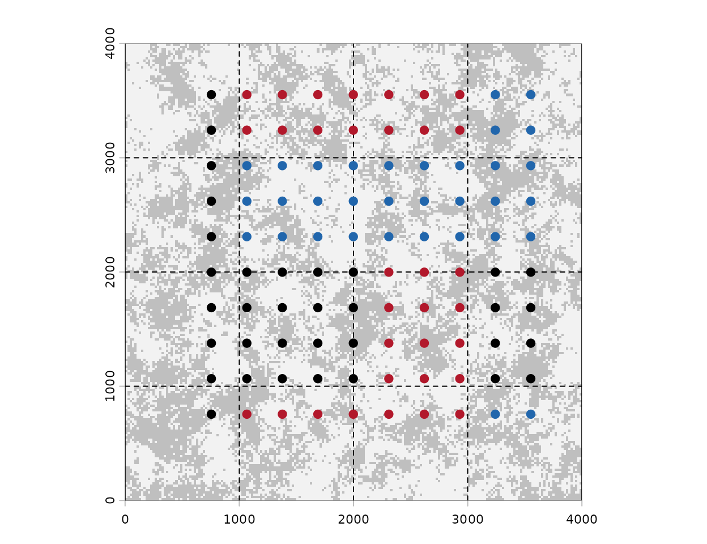

08. Cross-Validate Scale-of-Effect Models
Bill Peterman
Source:vignettes/v08-cross-validation.Rmd
v08-cross-validation.RmdWhat this vignette covers
AIC ranks models by how well they fit the data used to estimate them. Cross-validation (CV) asks a more direct question. How well does a model predict observations it never saw? You set part of the data aside, fit the model to the rest, predict the part you set aside, and score those predictions.
This vignette cross-validates the count model from
vignette("v01-quickstart", package = "multiScaleR"), which
you should read first. You will build several kinds of folds,
re-estimate the scales of effect inside each one, and compare candidate
models with cv_tab(). Short sections at the end cover
curved responses, other response families, repeated surveys of the same
sites, step-selection models, spatial random fields, and Bayesian
models.
Why the scales are re-estimated in every fold
A fold is one split of the data into analysis rows, which fit the model, and assessment rows, which are held out and predicted. The score is honest only if the assessment rows contribute nothing to the fitted model.
In a scale-of-effect model the kernel width, sigma, is estimated like
any regression coefficient. Suppose you estimated sigma once from all of
the data and then cross-validated a glm() on the resulting
covariates. Every held-out count would already have helped choose the
scale that defines its own predictors. The scores would flatter the
model. Standardizing a covariate with the full-data mean and standard
deviation leaks information the same way.
cross_validate() closes both leaks. Within each fold it
uses the analysis rows alone to estimate sigma, standardize the
kernel-weighted covariates, and fit the regression. It then applies that
fitted kernel and standardization to the assessment rows.
Prepare the data
The example uses the simulated counts at 100 survey locations from
the Quick Start. The true scales of effect are 250 m for
land1 and 500 m for land2.
data("landscape_counts") # counts and one site-level covariate
data("surv_pts") # survey locations
pts <- vect(surv_pts) # convert to a terra SpatVector
land <- rast(system.file("extdata", "landscape.tif", package = "multiScaleR"))
# bin = TRUE stores the distance-binned summaries used by the default
# fitting backend of cross_validate()
inputs <- kernel_prep(pts = pts, raster_stack = land, max_D = 1700,
kernel = "gaussian", bin = TRUE, verbose = FALSE)
# Response data and kernel-weighted covariates, one row per survey point
dat <- data.frame(landscape_counts, inputs$kernel_dat)Rows are matched by name. The row names of dat must
equal those of inputs$kernel_dat, and folds refer to rows
by the same names ("1" to "100" here).
cross_validate() rebuilds the landscape columns inside
every fold, so the values of land1 and land2
stored in dat are never used.
Choose folds that match your prediction question
How you divide the data decides what the scores mean. Choose the design from your sampling scheme and the use you have in mind for the model, before you look at any scores.
| Fold design | Build it with | The scores tell you how well the model predicts |
|---|---|---|
| Random rows | A list you write yourself | New observations scattered among the locations you sampled |
| Whole groups | grouped_cv_folds() |
Sites, animals, or years the model has never seen |
| Spatial blocks | spatial_cv_folds() |
Parts of the landscape away from the training locations |
| Spatial blocks with a buffer | spatial_cv_folds(buffer = ) |
Places at least the buffer distance from every training point |
Hold out spatial blocks
spatial_cv_folds() lays a square grid over the survey
points and assigns whole grid blocks to folds. It needs coordinates in a
projected coordinate reference system (CRS), so that
block_size is a distance.
The bundled points and raster are simulated and carry no CRS. Their
coordinates span 0 to 4,000 and stand for meters, so the call below
declares EPSG:32617, a UTM zone with meter units, only to state those
units for the example. With your own data, pass an sf or
SpatVector object that carries its projected CRS and leave
crs out. Longitude and latitude are rejected.
# 1,000 m blocks assigned to three folds. Coordinates come from terra.
folds <- spatial_cv_folds(crds(pts), block_size = 1000, k = 3, crs = 32617)
folds
#> Cross-validation folds: spatial
#> fold analysis assessment excluded
#> fold1 66 34 0
#> fold2 67 33 0
#> fold3 67 33 0
# One row per survey point: coordinates, block, and assessment fold
where <- attr(folds, "fold_info")$assignment
fold_col <- c(fold1 = "black", fold2 = "#2166AC", fold3 = "#B2182B")
plot(land$land1, col = gray(c(0.95, 0.75)), legend = FALSE)
abline(v = 1000 * 1:3, h = 1000 * 1:3, lty = 2) # block edges
points(where$x, where$y, pch = 19, col = fold_col[where$fold])
Survey points over land1, colored by the fold
that holds them out (black, fold 1; blue, fold 2; red, fold 3). Dashed
lines mark the 1,000 m blocks.
How to read this output: Each fold holds out about a
third of the survey points (assessment) and fits the model
to the rest (analysis). Every point is held out exactly
once. On the map a fold is a set of whole blocks, and those blocks need
not touch. The function balances the number of points per fold and makes
no random draws, so the same call always returns the same folds.
Choosing block_size: Larger blocks put
more distance between a held-out point and its nearest training point,
which moves the task closer to predicting a new area. The function stops
if fewer than k blocks hold points.
Add a buffer between training and assessment points
Points on either side of a block edge can still be close neighbors. A buffer removes training points that lie within a set distance of any assessment point. The survey points here sit about 310 m apart, so a 320 m buffer removes the nearest neighbors.
# Drop training blocks that have a point within 320 m of an assessment point
folds_buffer <- spatial_cv_folds(crds(pts), block_size = 1000, k = 3,
buffer = 320, crs = 32617)
folds_buffer
#> Cross-validation folds: spatial
#> fold analysis assessment excluded
#> fold1 22 34 44
#> fold2 11 33 56
#> fold3 13 33 54How to read this output: excluded
counts the points used for neither fitting nor assessment in that fold.
The buffer removes a whole block when any one of its points falls inside
the buffer distance, so it can remove far more than a thin strip. Only
11 to 22 points remain for fitting here, too few to estimate two scales
and four coefficients. You will see the consequence below.
Hold out whole groups or random rows
When rows share a site, an animal, or a year, keep each group on one
side of the split, or the model will predict a held-out row with help
from its own group. grouped_cv_folds() takes one group
label per row. If the groups also have locations, pass the labels to
spatial_cv_folds(group = ).
# Twelve records from six sites, two visits each
site_id <- rep(c("A", "B", "C", "D", "E", "F"), each = 2)
grouped <- grouped_cv_folds(site_id, k = 3, ids = paste0("visit", 1:12))
grouped$fold1$assessment # both visits to a site are held out together
#> [1] "visit1" "visit2" "visit7" "visit8"A set of folds is a named list. Each element holds two character
vectors of row names, analysis and assessment.
You can write that list yourself, which is how you build random
folds.
Cross-validate the scale-of-effect model
cross_validate() takes the model formula, the data, the
prepared kernel inputs, the folds, and the response family. You do not
fit a starting model first. The call estimates both scales and all
coefficients once per fold.
cv <- cross_validate(counts ~ site + land1 + land2,
data = dat,
kernel_inputs = inputs,
folds = folds,
family = "poisson",
keep_selection = TRUE) # needed later for select_cv()
cv
#> Cross-validation: 3 of 3 folds scored; 100 of 100 input rows assessed.
#> metric estimate unit n_assessment n_scored weight_sum complete
#> rmse 1.620410 observation 100 100 100 TRUE
#> mae 1.217206 observation 100 100 100 TRUE
#> neg_log_score 1.631381 observation 100 100 100 TRUE
#> deviance 1.296024 observation 100 100 100 TRUEHow to read this output: The first line reports how many folds finished and how many rows were predicted. Each row of the table is one score, pooled over all 100 held-out predictions. Lower is better for every score.
| Score | What it measures | Units here |
|---|---|---|
rmse |
Root mean squared error between observed and predicted counts. Large misses weigh heavily | Animals per survey |
mae |
Mean absolute error between observed and predicted counts | Animals per survey |
neg_log_score |
Negative log of the probability the model gave to the observed count, averaged over rows | Log units per survey |
deviance |
Poisson deviance of the held-out counts, averaged over rows (Poisson only) | Deviance per survey |
Held-out predictions miss the observed count by about 1.2 animals on average, in data whose mean count is 2. The two error scores judge only the predicted mean. The negative log score judges the whole predicted distribution, so it also penalizes a model that is too confident. A score means little alone and becomes useful when you compare candidates.
The result also stores what each fold estimated.
# Sigma (m) estimated from the analysis rows of each fold
round(t(sapply(cv$training, function(fold) {
setNames(fold$scale_est$Mean, rownames(fold$scale_est))
})))
#> land1 land2
#> fold1 239 523
#> fold2 247 490
#> fold3 243 509How to read this output: Each row is a separate fit to about two thirds of the data. The estimates stay near the true values of 250 m and 500 m, so no single block of surveys drives the estimated scales. Scales that swing widely among folds would warn you that the data identify them poorly.
Compare candidate models with cv_tab()
A score needs a baseline. cross_validate_glm()
cross-validates an ordinary GLM that has no scale to estimate. Give it
the same folds.
# Intercept only: predicts the training mean count everywhere
null_cv <- cross_validate_glm(counts ~ 1, dat, folds, family = "poisson",
keep_selection = TRUE)
# Site covariate only: no landscape information
site_cv <- cross_validate_glm(counts ~ site, dat, folds, family = "poisson",
keep_selection = TRUE)
candidates <- list(landscape = cv, site_only = site_cv, null = null_cv)Read the pooled scores
cv_tab() ranks the candidates on one score, which you
must name.
tab_rmse <- cv_tab(candidates, metric = "rmse")
tab_nls <- cv_tab(candidates, metric = "neg_log_score")
tab_rmse[, c("Modnames", "Rank", "Score", "Delta", "N_scored", "Warnings")]
#> Modnames Rank Score Delta N_scored Warnings
#> 1 landscape 1 1.620410 0.0000000 100 0
#> 2 null 2 2.210604 0.5901935 100 0
#> 3 site_only 3 2.232857 0.6124465 100 0
tab_nls[, c("Modnames", "Rank", "Score", "Delta", "N_scored", "Warnings")]
#> Modnames Rank Score Delta N_scored Warnings
#> 1 landscape 1 1.631381 0.0000000 100 0
#> 2 null 2 2.163750 0.5323688 100 0
#> 3 site_only 3 2.169778 0.5383968 100 0How to read these tables: The best model is listed
first. Delta is each model’s distance from it,
N_scored is the number of held-out predictions behind the
score, and Warnings counts the warnings recorded while
fitting.
- The landscape model predicts held-out counts with an RMSE of 1.62 animals, against 2.21 for the null model. The landscape covariates remove about 27% of the prediction error.
- The site-only model scores slightly worse than the null model. The
sitecovariate has a true effect in these data, yet used alone it does not improve predictions for held-out blocks. - A difference in negative log score converts to a ratio of
probabilities with
exp(). The landscape model’s advantage of 0.53 over the null model means it gave the observed counts 1.7 times the probability, as a geometric average per survey.
The pooled RMSE is the square root of the mean squared error over all 100 predictions, not the average of the three fold values. These scores carry no penalty for model complexity. They are not AIC values or model weights.
Look at each fold
by_fold <- cv_tab(candidates, metric = "rmse", by_fold = TRUE)
by_fold[, c("Fold", "Modnames", "Rank", "Score", "Delta")]
#> Fold Modnames Rank Score Delta
#> 1 fold1 landscape 1 1.232381 0.0000000
#> 2 fold1 null 2 2.017854 0.7854730
#> 3 fold1 site_only 3 2.091114 0.8587336
#> 4 fold2 landscape 1 1.359727 0.0000000
#> 5 fold2 null 2 1.608284 0.2485578
#> 6 fold2 site_only 3 1.620645 0.2609183
#> 7 fold3 landscape 1 2.131458 0.0000000
#> 8 fold3 site_only 2 2.824229 0.6927713
#> 9 fold3 null 3 2.833142 0.7016836How to read this table: Each fold is ranked
separately. The landscape model ranks first in all three, so its
advantage does not depend on one part of the study area. Every model
scores worst in fold3, where counts are higher and more
variable than elsewhere. Use this table to check that a ranking is
consistent. Three folds are too few, and too dependent on one another,
to treat their spread as a standard error.
What this means for your study. Use the pooled table to rank candidates you chose in advance, and report the fold design with it. If you then use the scores to choose a kernel, a block size, or new candidates, the winning score is optimistic. Confirm the final choice on data that played no part in choosing it.
Check that every fold finished
cv$complete # TRUE: every fold was fitted and scored
#> [1] TRUE
cv$fold_results # rows used for fitting and assessment, and the fold status
#> fold n_analysis n_assessment status
#> 1 fold1 66 34 scored
#> 2 fold2 67 33 scored
#> 3 fold3 67 33 scoredHow to read this output:
complete = TRUE means every planned fold was fitted and
scored. When a fold fails, complete is FALSE,
that fold’s status reads "failed", and the
pooled scores are NA. cv_tab() then stops with
an error. It will not rank a candidate on a subset of the folds, because
a model scored on the easy folds alone would look better than it is. Curved responses shows a failed run and how
to repair it.
See how the fold design changes the answer
The same model earns a different score under each fold design, because each design poses a different prediction task.
# The same landscape model, scored on random rows and on the buffered blocks
cv_random <- cross_validate(counts ~ site + land1 + land2, dat, inputs,
folds_random, family = "poisson")
cv_buffer <- cross_validate(counts ~ site + land1 + land2, dat, inputs,
folds_buffer, family = "poisson")
rmse_of <- function(x) x$summary$estimate[x$summary$metric == "rmse"]
data.frame(design = c("Random rows", "Spatial blocks", "Blocks, 320 m buffer"),
rmse = round(c(rmse_of(cv_random), rmse_of(cv), rmse_of(cv_buffer)), 2),
complete = c(cv_random$complete, cv$complete, cv_buffer$complete))
#> design rmse complete
#> 1 Random rows 1.55 TRUE
#> 2 Spatial blocks 1.62 TRUE
#> 3 Blocks, 320 m buffer 194.61 TRUEHow to read this table: Random rows give the lowest error. Every held-out point has close neighbors in the training data, which is the easiest task of the three. Spatial blocks ask the model to predict areas it has not sampled, and the error rises a little. The buffered design fails in a different way. With 11 to 22 training points per fold the fitted models extrapolate badly, and the error dwarfs the counts themselves. All three runs are complete. A complete result says only that the calculations finished, not that the model is sensible.
cv_tab() compares only candidates scored on identical
folds and stops otherwise, which is why this table is assembled by
hand.
Validate other model structures
The CV functions cover GLMs, models with a random intercept for sites
or other groups, step-selection models, models with a spatial random
field, and Bayesian models. unmarked and GAM fits have no
CV function. Every score except the Bayesian one uses each fold’s point
estimates, so it carries no parameter uncertainty and no standard
error.
Curved responses
Formula terms such as scale(), poly(),
splines::ns(), and splines::bs() learn
constants from the data, for example spline knots. The CV functions
learn those constants from the analysis rows of each fold and reuse them
for the assessment rows. Write the transformation in the formula. Do not
transform the full data set beforehand.
library(splines)
# A natural spline in land1 that chooses its knots from the data
df_cv <- cross_validate(counts ~ site + ns(land1, df = 3) + land2,
dat, inputs, folds, family = "poisson")
df_cv$complete # FALSE: no fold was scored
#> [1] FALSE
df_cv$errors$fold1$message # the reason, recorded for each fold
#> [1] "Dynamic splines require explicit fixed knots and Boundary.knots, without adaptive df; use the refit backend otherwise."
# The message names the fix
curve_cv <- cross_validate(counts ~ site + ns(land1, df = 3) + land2,
dat, inputs, folds, family = "poisson",
backend = "refit")
curve_cv$complete
#> [1] TRUE
cv_tab(list(linear = cv, curved = curve_cv),
metric = "rmse")[, c("Modnames", "Rank", "Score", "Delta")]
#> Modnames Rank Score Delta
#> 1 curved 1 1.502297 0.0000000
#> 2 linear 2 1.620410 0.1181136How to read this output: The first run fails in
every fold and warns, quoting the reason. The default backend accepts a
spline only when you fix its knots and
Boundary.knots in the formula, and the errors
element records this for each fold. With backend = "refit"
all folds finish, and the curved model ranks first by 0.12 animals per
survey. The counts were simulated with a straight-line effect of
land1 on the log scale, so a gap this small, from three
folds of one data set, is weak evidence for curvature.
?cross_validate describes the backends.
Overdispersed counts and positive responses
family accepts "gaussian",
"poisson", "binomial", "nbinom2",
and "Gamma". The negative binomial family
("nbinom2") lets the variance of a count exceed its mean.
Its variance is mu + mu^2 / theta, where mu is
the expected count, so a small theta means strong extra variation and a
very large theta approaches a Poisson model. Theta is estimated from the
analysis rows of each fold and held fixed when the assessment rows are
scored.
# Negative binomial versions of the site-only and landscape models
site_nb <- cross_validate_glm(counts ~ site, dat, folds, family = "nbinom2")
land_nb <- cross_validate(counts ~ site + land1 + land2, dat, inputs, folds,
family = "nbinom2")
count_models <- list(site_poisson = site_cv, site_nb = site_nb,
landscape_poisson = cv, landscape_nb = land_nb)
cv_tab(count_models,
metric = "neg_log_score")[, c("Modnames", "Rank", "Score", "Delta", "Warnings")]
#> Modnames Rank Score Delta Warnings
#> 1 landscape_poisson 1 1.631381 0.000000000 0
#> 2 landscape_nb 2 1.633579 0.002198079 3
#> 3 site_nb 3 1.931871 0.300489994 0
#> 4 site_poisson 4 2.169778 0.538396774 0
# Theta estimated in each fold
round(rbind(site_nb = sapply(site_nb$distribution, function(fold) fold$theta),
landscape_nb = sapply(land_nb$distribution, function(fold) fold$theta)), 1)
#> fold1 fold2 fold3
#> site_nb 1.6 1.4 1.9
#> landscape_nb 31.2 19.0 100000.0How to read this output: Compare count distributions
with the negative log score, because RMSE and MAE see only the predicted
mean. Without the landscape covariates the counts look overdispersed.
Theta is between 1 and 2, and the negative binomial model predicts
better than the Poisson model. Once the landscape covariates enter,
theta becomes large and the two families score almost the same. The
extra variation was unexplained landscape effect, not a property of the
counts. In fold3 theta reached the upper limit of the
search, which amounts to a Poisson model. The three warnings report that
theta sits at or near that limit. Read them with
land_nb$warnings.
Use family = "Gamma" for a continuous response that is
strictly positive. It has a log link, so exp() of a
coefficient is a multiplicative change in the expected response.
?cross_validate_glm covers the theta and
dispersion arguments, which fix those parameters at values
you know in advance.
Model selection by information criterion
Suppose your plan is to fit several models and keep the one with the
lowest AICc. select_cv() scores that whole procedure. In
each fold it picks the candidate with the lowest AICc on the analysis
rows, then uses that candidate’s held-out predictions. It fits no new
models, but every candidate must have been run with
keep_selection = TRUE. Candidates may use different
families, such as Poisson and negative binomial. The procedure is then
scored only on the metrics they share, which
selected$selection$metrics lists.
selected <- select_cv(candidates, criterion = "AICc")
selected$selection$chosen # model chosen in each fold
#> fold1 fold2 fold3
#> "landscape" "landscape" "landscape"
selected$selection$tables$fold1 # training AICc table for the first fold
#>
#> Model selection based on AICc:
#>
#> K AICc Delta_AICc AICcWt Cum.Wt LL
#> landscape 6 221.70 0.00 1 1 -104.14
#> site_only 2 287.62 65.92 0 1 -141.72
#> null 1 287.86 66.16 0 1 -142.90How to read this output: The landscape model has the
lowest training AICc in every fold, so the score for the procedure
equals that model’s own score. K is the number of estimated
parameters. The landscape model has six, which are four regression
coefficients and two scales of effect. Never pick a fold’s model from
its assessment score and then report that score.
Repeated surveys of the same sites
When each site is surveyed several times, a random intercept
for site lets every site have its own baseline count, drawn from a
common distribution. It accounts for the similarity among visits to one
site. cross_validate_mixed() cross-validates such a model,
fitted with glmmTMB. The function is experimental. Decide
which prediction you want before you build the folds.
-
A new site. Hold out whole sites. The model knows
nothing about a held-out site, so it averages its prediction over the
fitted spread of site effects
(
prediction = "new_group"). -
A later visit to a known site. Hold out the last
visits at every site. The earlier visits tell the model whether a site
runs high or low, and the prediction uses that knowledge
(
prediction = "existing_group").
The running example has one survey per point, so the example below simulates eight visits to each of 18 sites. The habitat effect is 0.4 on the log scale, and the site effects have a standard deviation of 0.7.
set.seed(10)
site <- factor(rep(sprintf("site%02d", 1:18), each = 8)) # 18 sites
habitat <- rnorm(length(site)) # standardized habitat
site_effect <- rnorm(nlevels(site), sd = 0.7)[site] # one value per site
surveys <- data.frame(site, habitat, visit = rep(1:8, nlevels(site)))
surveys$count <- rpois(nrow(surveys), exp(0.9 + 0.4 * habitat + site_effect))
# New sites: all eight visits to a site are held out together
new_sites <- grouped_cv_folds(surveys$site, k = 3, ids = rownames(surveys))
habitat_new <- cross_validate_mixed(count ~ habitat + (1 | site), surveys,
new_sites, family = "poisson",
prediction = "new_group")
intercept_new <- cross_validate_mixed(count ~ 1 + (1 | site), surveys,
new_sites, family = "poisson",
prediction = "new_group")
mixed_tab <- cv_tab(list(habitat = habitat_new, intercept = intercept_new),
metric = "neg_log_score")
mixed_tab[, c("Modnames", "Rank", "Score", "Delta", "Unit")]
#> Modnames Rank Score Delta Unit
#> 1 habitat 1 1.986689 0.000000 joint_group_density_per_row
#> 2 intercept 2 2.208725 0.222036 joint_group_density_per_rowHow to read this table: The score is joint
for each held-out site. All eight visits share one unknown site effect,
so the model scores them together and then divides by the number of
held-out surveys. Lower is better, as before. The habitat model ranks
first. Its advantage of 0.22 means it gave the observed counts at new
sites 1.25 times the probability, as a geometric average per survey.
cv_tab() compares a mixed-model result only with other
mixed-model results on the same folds, because a joint score and the
per-survey score of cross_validate_glm() are on different
footings.
The same model answers the second question with different folds.
# Later visits: train on visits 1 to 6, predict visits 7 and 8 at every site
ids <- rownames(surveys)
later_visits <- list(later = list(analysis = ids[surveys$visit <= 6],
assessment = ids[surveys$visit > 6]))
habitat_later <- cross_validate_mixed(count ~ habitat + (1 | site), surveys,
later_visits, family = "poisson",
prediction = "existing_group")
habitat_later$summary[, c("metric", "estimate", "n_assessment")]
#> metric estimate n_assessment
#> 1 neg_log_score 2.118291 36
#> 2 rmse 2.553329 36How to read this output: Later visits to known sites are predicted with an RMSE of 2.55 animals per survey, against 2.89 for new sites. The earlier visits reveal whether a site runs high or low. The two designs hold out different surveys, so read them as answers to two questions, not as a ranking.
Supply kernel_inputs to re-estimate the scales of effect
in every fold, as cross_validate() does. Gaussian models
may also include a random slope. Poisson, binomial, negative binomial,
and Gamma models allow one random intercept.
?cross_validate_mixed lists the remaining options.
Step-selection models
A step-selection model predicts which of several available steps an
animal used. Each choice set has one used step and one or more
available steps, and the set must stay together in a fold.
cross_validate_clogit() scores the probability the model
gave to the used step. The artificial example below has 24 choice sets
of three steps each.
library(survival) # provides strata()
i <- 1:72
choices <- data.frame(
step = (i - 1) %/% 3 + 1, # choice set label, 1 to 24
used = as.numeric(i %% 3 == 1), # the first step of each set was used
habitat = sin(i * 1.7) # covariate unrelated to use
)
choice_folds <- grouped_cv_folds(choices$step, k = 3) # whole sets held out
choice_models <- list(
null = cross_validate_clogit(used ~ strata(step), choices, choice_folds),
habitat = cross_validate_clogit(used ~ habitat + strata(step), choices,
choice_folds))
cv_tab(choice_models,
metric = "neg_log_score")[, c("Modnames", "Rank", "Score", "Delta", "Unit")]
#> Modnames Rank Score Delta Unit
#> 1 null 1 1.098612 0.00000000 choice_set
#> 2 habitat 2 1.126067 0.02745496 choice_setHow to read this table: The score is the negative
log probability of the used step, averaged over held-out choice sets.
The null model gives each of three steps a probability of one third, and
-log(1/3) is 1.099. A useful covariate would lower that
score, and habitat does not. To test transfer to new
animals, build the folds from animal labels.
To estimate a scale of effect inside each fold, pass the prepared
kernel_inputs, as with cross_validate(). For a
landscape metric with a hard radius, set backend = "refit"
and list candidate radii with
optim_args = list(radius_grid = c(80, 140, 200)). Each fold
then refits the model at every radius and keeps the one with the highest
training likelihood.
vignette("v04-landscape-metrics", package = "multiScaleR")
shows the same search on a full data set, and
?cross_validate_clogit gives the details.
What this means for your study. A better held-out score does not show that the data locate a scale. In simulated step-selection data with a weak habitat effect, adding habitat improved the held-out score by about 0.015 log units per choice set. Yet only 22 of 96 bandwidth estimates fell within 25% of the true value, and 27 stopped at a search limit. Judge the scale itself with a likelihood profile.
Models with a spatial random field
cross_validate_field() cross-validates a model that
includes a spatial random field, or a smooth surface of spatially
correlated variation that the covariates do not explain. Set
family to "gaussian", "poisson",
"nbinom2", "binomial" (zeros and ones), or
"Gamma". In each fold the function estimates the regression
coefficients, the correlation range of the field, its standard
deviation, and the observation dispersion for the Gaussian, negative
binomial, and Gamma families. It keeps every visit to one location in
the same part of the split and scores the held-out observations jointly,
which accounts for the correlation among neighboring held-out points.
cv_tab() therefore compares field models only with other
field models, such as a Poisson and a negative binomial model on the
same folds.
For Gaussian responses the score is exact at the fitted parameters.
The other families are experimental, and their score rests on an
approximation, which in small simulated fields with known parameters
stayed within 0.05 log units per held-out observation of an exact
calculation. The predicted spread of new observations is less reliable
once the parameters are estimated. In simulations that held out buffered
locations, squared prediction errors averaged 1.5 to 2.7 times the
predicted variance, where a well-calibrated prediction gives 1. The
function requires the glmmTMB package and runs far longer
than the examples above. See ?cross_validate_field.
Bayesian models
cross_validate_bayes() refits a Bayesian model from
vignette("v13-bayesian-scales", package = "multiScaleR") in
every fold, so each fold samples its own posterior. It scores the
held-out observations with the posterior predictive density, which
averages over uncertainty in the coefficients, the scales of effect, and
the group effects. It is the only CV score in the package that carries
parameter uncertainty. The function is experimental, like the Bayesian
interface it builds on. Every fold runs the sampler, so a run takes
about as long as one full fit per fold.
Choose the folds from the prediction you have in mind. To forecast a
new year, train on the earlier years and hold out the next one. To
predict new sites, build the folds with grouped_cv_folds()
on the site labels. The model then averages over a site effect it has
never seen, and the observations that share that effect are scored
together. select_cv() does not apply to these results,
because a posterior has no training AIC.
What this means for your study. The average over unseen group effects uses a finite number of simulated effects, set by
new_group_draws. In simulations, the default put 3 of 32 pairs of models in the wrong order, each with a score difference below 0.005 per survey. When two candidates score that closely, rerun both with a largernew_group_drawsand the sameseed. Treat the comparison as unresolved if the ranking changes.
Quick reference
library(multiScaleR)
library(terra)
# 1. Prepare the data
data("landscape_counts"); data("surv_pts")
pts <- vect(surv_pts)
land <- rast(system.file("extdata", "landscape.tif", package = "multiScaleR"))
inputs <- kernel_prep(pts = pts, raster_stack = land, max_D = 1700,
kernel = "gaussian", bin = TRUE, verbose = FALSE)
dat <- data.frame(landscape_counts, inputs$kernel_dat)
# 2. Build folds that match the prediction question
folds <- spatial_cv_folds(crds(pts), block_size = 1000, k = 3, crs = 32617)
folds_buffer <- spatial_cv_folds(crds(pts), block_size = 1000, k = 3,
buffer = 320, crs = 32617)
site_id <- rep(c("A", "B", "C", "D", "E", "F"), each = 2) # group per row
grouped <- grouped_cv_folds(site_id, k = 3, ids = paste0("visit", 1:12))
# 3. Cross-validate: scales and coefficients are re-estimated in every fold
cv <- cross_validate(counts ~ site + land1 + land2, data = dat,
kernel_inputs = inputs, folds = folds,
family = "poisson", keep_selection = TRUE)
cv # pooled scores, lower is better
cv$complete # TRUE: every fold was fitted and scored
cv$training # scales and coefficients estimated in each fold
# 4. Reference models on the same folds
null_cv <- cross_validate_glm(counts ~ 1, dat, folds, family = "poisson",
keep_selection = TRUE)
site_cv <- cross_validate_glm(counts ~ site, dat, folds, family = "poisson",
keep_selection = TRUE)
candidates <- list(landscape = cv, site_only = site_cv, null = null_cv)
# 5. Compare
cv_tab(candidates, metric = "rmse") # pooled, in counts
cv_tab(candidates, metric = "neg_log_score") # whole distribution
cv_tab(candidates, metric = "rmse", by_fold = TRUE) # is the ranking consistent?
# 6. Score an AICc selection rule
selected <- select_cv(candidates, criterion = "AICc")
selected$selection$chosen # model chosen per fold
# 7. Repeated surveys: choose the prediction target, then compare candidates
new_sites <- grouped_cv_folds(surveys$site, k = 3, ids = rownames(surveys))
habitat_new <- cross_validate_mixed(count ~ habitat + (1 | site), surveys,
new_sites, family = "poisson",
prediction = "new_group") # unseen sites
intercept_new <- cross_validate_mixed(count ~ 1 + (1 | site), surveys,
new_sites, family = "poisson",
prediction = "new_group")
cv_tab(list(habitat = habitat_new, intercept = intercept_new),
metric = "neg_log_score") # joint score per surveySummary of key functions
| Function | Purpose |
|---|---|
spatial_cv_folds() |
Build folds from whole grid blocks, with an optional buffer |
grouped_cv_folds() |
Build folds that keep each sampling group together |
cross_validate() |
Re-estimate scales and coefficients in each fold and score held-out predictions |
cross_validate_glm() |
Cross-validate a GLM that has no scale to estimate |
cv_tab() |
Rank candidates on one score, pooled or per fold |
select_cv() |
Score a selection rule based on training AIC, AICc, or BIC |
cross_validate_mixed() |
Cross-validate a model with a random intercept, for new groups or later visits to known groups |
cross_validate_clogit() |
Cross-validate a step-selection model on whole choice sets |
cross_validate_field() |
Cross-validate a model with a spatial random field |
cross_validate_bayes() |
Refit a Bayesian model in every fold and score the posterior predictive density |
See also
-
vignette("v01-quickstart", package = "multiScaleR"), the core workflow and the data used here. -
vignette("v02-user-guide", package = "multiScaleR"), model selection with AIC and BIC. -
vignette("v09-estimates-and-intervals", package = "multiScaleR"), what each estimate and interval includes. -
vignette("v07-fitting-methods", package = "multiScaleR"), which covariate types each fitting backend accepts. -
vignette("v04-landscape-metrics", package = "multiScaleR"), estimating the radius of a landscape metric, including a search over a grid of radii. -
vignette("v06-year-specific-rasters", package = "multiScaleR"), preparing inputs when groups of surveys have their own maps, whichcross_validate()also accepts. -
vignette("v13-bayesian-scales", package = "multiScaleR"), the Bayesian models thatcross_validate_bayes()refits. - The help page
?"multiScaleR-glossary"defines the terms used in these vignettes.